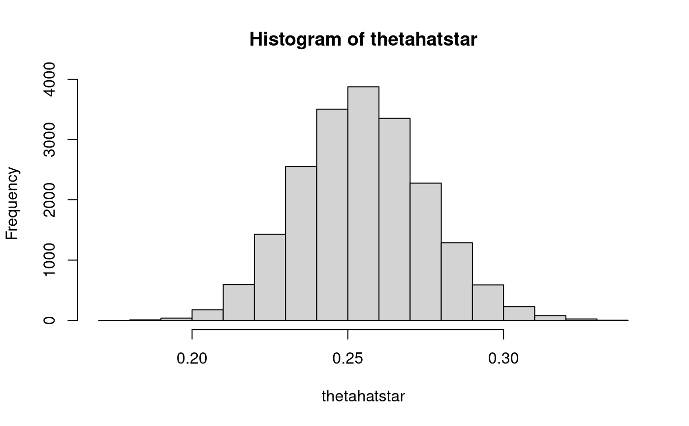

R/mvn_mnar_unstd_mc.mvn.R
mvn_mnar_mc.mvn.RdMonte Carlo Method Assuming Multivariate Normal Distribution for Indirect Effect in a Simple Mediation Model for Data Generated from a Multivariate Normal Distribution with Data Missing Not at Random
mvn_mnar_mc.mvn( taskid, R = 20000L, alphahat, sehatalphahat, betahat, sehatbetahat )
| taskid | Numeric. Task ID. |
|---|---|
| R | Integer. Monte Carlo replications. |
| alphahat | Numeric.
Estimated slope of path from |
| sehatalphahat | Numeric.
Estimated standard error of slope of path from |
| betahat | Numeric.
Estimated slope of path from |
| sehatbetahat | Numeric.
Estimated standard error of slope of path from |
Other monte carlo method functions:
mc.mvn(),
mc.t(),
mvn_mar_mc.mvn_pcci_simulation(),
mvn_mar_mc.mvn_pcci_task(),
mvn_mar_mc.mvn_simulation(),
mvn_mar_mc.mvn_task(),
mvn_mar_mc.mvn(),
mvn_mar_std_mc.mvn.sem_pcci_simulation(),
mvn_mar_std_mc.mvn.sem_pcci_task(),
mvn_mar_std_mc.mvn.sem_simulation(),
mvn_mar_std_mc.mvn.sem_task(),
mvn_mar_std_mc.mvn.sem(),
mvn_mc.mvn_pcci_simulation(),
mvn_mc.mvn_pcci_task(),
mvn_mc.mvn_simulation(),
mvn_mc.mvn_task(),
mvn_mc.mvn(),
mvn_mc.t_pcci_simulation(),
mvn_mc.t_pcci_task(),
mvn_mc.t_simulation(),
mvn_mc.t_task(),
mvn_mc.t(),
mvn_mcar_mc.mvn_pcci_simulation(),
mvn_mcar_mc.mvn_pcci_task(),
mvn_mcar_mc.mvn_simulation(),
mvn_mcar_mc.mvn_task(),
mvn_mcar_mc.mvn(),
mvn_mcar_std_mc.mvn.sem_pcci_simulation(),
mvn_mcar_std_mc.mvn.sem_pcci_task(),
mvn_mcar_std_mc.mvn.sem_simulation(),
mvn_mcar_std_mc.mvn.sem_task(),
mvn_mcar_std_mc.mvn.sem(),
mvn_mnar_mc.mvn_pcci_simulation(),
mvn_mnar_mc.mvn_pcci_task(),
mvn_mnar_mc.mvn_simulation(),
mvn_mnar_mc.mvn_task(),
mvn_mnar_std_mc.mvn.sem_pcci_simulation(),
mvn_mnar_std_mc.mvn.sem_pcci_task(),
mvn_mnar_std_mc.mvn.sem_simulation(),
mvn_mnar_std_mc.mvn.sem_task(),
mvn_mnar_std_mc.mvn.sem(),
mvn_std_mc.mvn.delta_pcci_simulation(),
mvn_std_mc.mvn.delta_pcci_task(),
mvn_std_mc.mvn.delta_simulation(),
mvn_std_mc.mvn.delta_task(),
mvn_std_mc.mvn.delta(),
mvn_std_mc.mvn.sem_pcci_simulation(),
mvn_std_mc.mvn.sem_pcci_task(),
mvn_std_mc.mvn.sem_simulation(),
mvn_std_mc.mvn.sem_task(),
mvn_std_mc.mvn.sem(),
mvn_std_mc.mvn.tb_pcci_simulation(),
mvn_std_mc.mvn.tb_pcci_task(),
mvn_std_mc.mvn.tb_simulation(),
mvn_std_mc.mvn.tb_task(),
mvn_std_mc.mvn.tb(),
mvn_std_mc.t.delta_pcci_simulation(),
mvn_std_mc.t.delta_pcci_task(),
mvn_std_mc.t.delta_simulation(),
mvn_std_mc.t.delta_task(),
mvn_std_mc.t.delta(),
mvn_std_mc.t.sem_pcci_simulation(),
mvn_std_mc.t.sem_pcci_task(),
mvn_std_mc.t.sem_simulation(),
mvn_std_mc.t.sem_task(),
mvn_std_mc.t.sem(),
mvn_std_mc.t.tb_pcci_simulation(),
mvn_std_mc.t.tb_pcci_task(),
mvn_std_mc.t.tb_simulation(),
mvn_std_mc.t.tb_task(),
mvn_std_mc.t.tb()
taskid <- 1 data <- mvn_dat(taskid = taskid) data <- mvn_dat_mnar(data = data, taskid = taskid) fit.sem(data = data, minimal = TRUE, std = FALSE, fiml = TRUE)#> [1] 0.2547029fit <- mvn_mnar_fit.sem(data = data, taskid = taskid) thetahatstar <- mvn_mnar_mc.mvn( taskid = taskid, R = 20000L, alphahat = fit["alphahat"], sehatalphahat = fit["sehatalphahat"], betahat = fit["betahat"], sehatbetahat = fit["sehatbetahat"] ) hist(thetahatstar)